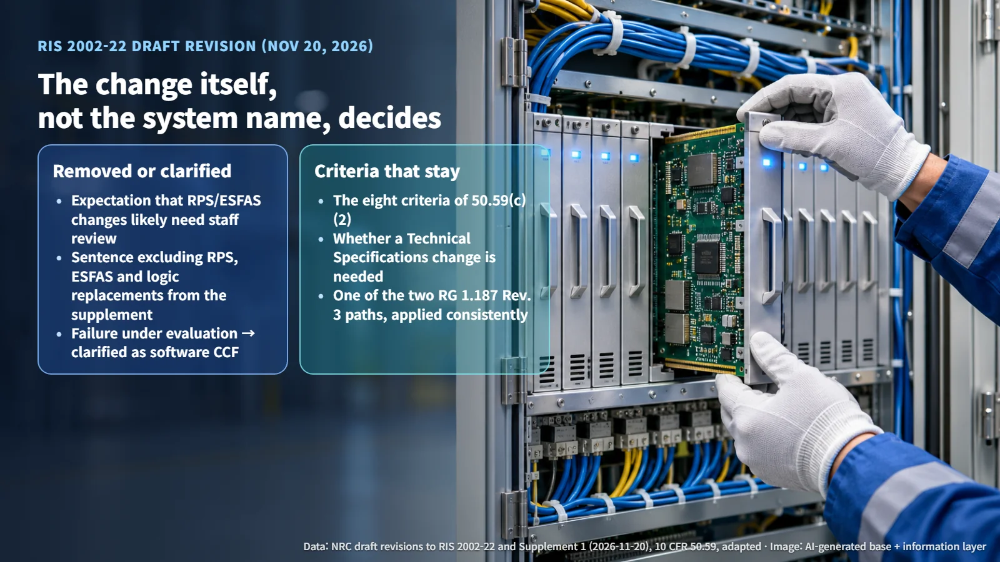
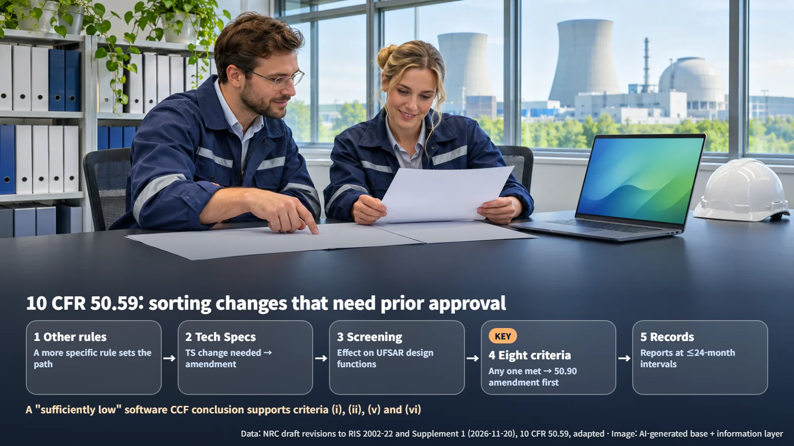
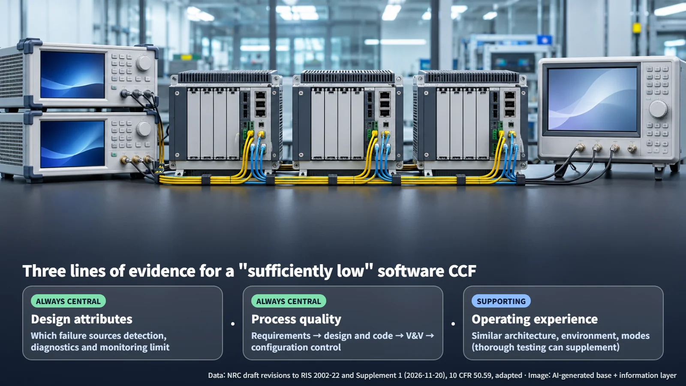

United States · Regulation · Digital I&C
Going Digital in the Control Room: When Does a Nuclear Plant Need NRC Approval First? The 50.59 Guidance Revision and Software Common Cause Failure
The NRC's draft revisions to RIS 2002-22 and its Supplement remove wording that read as keeping reactor protection and safety actuation upgrades out of the 50.59 process, with comments due December 21.
Many operating reactors still rely on analog instrumentation and control equipment, and replacing it with digital systems raises two natural questions: can software be trusted to protect a reactor, and does every such upgrade require a regulator's sign-off? On November 20, 2026, the U.S. Nuclear Regulatory Commission (NRC) published draft revisions to two pieces of digital instrumentation and control (digital I&C) guidance in the Federal Register. Comments are due by December 21 (Docket ID NRC-2026-5248). After reviewing the comments, the NRC will decide whether to issue the final documents.
The Sentences the Draft Removes and the Criteria It Keeps
The two documents are Regulatory Issue Summary (RIS) 2002-22, issued in 2002, and its Supplement 1, issued in 2018. RIS 2002-22 conditionally endorsed NEI 01-01, joint guidance from the Electric Power Research Institute (EPRI) and the Nuclear Energy Institute (NEI). Supplement 1 spelled out the basis and documentation expected for qualitative assessments.
The draft focuses on two safety-significant systems: the Reactor Protection System (RPS), which shuts the reactor down when conditions go out of bounds, and the Engineered Safety Features Actuation System (ESFAS), which starts safety equipment such as emergency cooling. The main changes fall into five areas.
| Item | Current text | Draft revision |
|---|---|---|
| Safety-significant systems | Says RPS and ESFAS changes are likely to need NRC staff review | Expectation removed; each change is judged against the rule's criteria |
| Scope of the supplement | Excludes RPS, ESFAS, and internal logic replacements as direct subjects | Exclusion removed |
| Failure under evaluation | Broad terms such as "failure" | Clarified as software CCF; shared resources and architecture changes reviewed separately |
| Guidance versions | Based on 2001 industry guidance and 1997 review guidance | Recommends the latest applicable NRC-endorsed guidance |
| Screening sentence | Asks whether a design function is affected | First sentence adds "adversely" |
(Source: NRC, Draft Revisions to RIS 2002-22 and Supplement 1, adapted)
The practical effect is clear. Digital changes to safety-significant systems had come to read as presumptively requiring prior review; under the draft, the content of a change, rather than the name of the system, drives the decision. Whether prior approval is needed continues to be decided case by case under the eight criteria of the rule and the plant's Technical Specifications. The existing principle in Regulatory Guide (RG) 1.187 Revision 3 also stays in place: a licensee picks one of the two accepted paths, NEI 01-01 or NEI 96-07 Appendix D, and applies it consistently.

How 50.59 Sorts Changes That Need Prior Approval
Under 10 CFR 50.59, the licensee performs its own evaluation to identify which changes require NRC review before implementation. The process runs in five steps:
- Check whether a more specific regulation governs the change.
- Check whether a change to the Technical Specifications in the license is needed; if so, the change goes through the license amendment path.
- Screen the effect on design functions described in the Updated Final Safety Analysis Report (UFSAR).
- Evaluate the change against the eight criteria in 50.59(c)(2). If any one applies, a license amendment under 50.90 is required before implementation.
- Record and report the basis for the decision.

The eight criteria ask whether the change would increase the frequency of accidents or the likelihood of equipment malfunctions (i, ii); increase their consequences (iii, iv); create the possibility of a different type of accident or malfunction result (v, vi); affect a design basis limit for a fission product barrier (vii); or depart from a method of evaluation used in the safety analyses (viii).
The draft ties a conclusion that the likelihood of software common cause failure is "sufficiently low" to the review of criteria (i), (ii), (v), and (vi). That is four of the eight criteria, or half. Accident consequences, barrier limits, and evaluation methods are each reviewed under their own criteria. For example, if a new display or control panel lengthens operator response time, that time must be compared with the design function time stated in the UFSAR.
Three Lines of Evidence for "Sufficiently Low" Software Common Cause Failure
Software common cause failure (CCF) occurs when multiple channels share the same defect and operating conditions and lose their function together. Think of a textbook typo that every student who studied from it repeats on the exam. Adding more channels still leaves a shared vulnerability in place when they all run the same software.
"Sufficiently low" means a likelihood well below the single failures considered in the UFSAR and comparable to other common cause failures, such as design defects or maintenance errors. The judgment rests on qualitative evidence matched to the plant's analysis assumptions, built on three pillars:
- Design attributes: how fault detection, diagnostics, and independent monitoring limit specific sources of failure
- Quality of the design process: the traceable chain from requirements through design, implementation, verification and validation (V&V), and configuration management
- Operating experience: applicability based on similar architecture, environment, and operating modes
Design attributes and process quality are always central. For simple, testable devices, thorough testing can make up for limited operating experience.

The emphasis of the evidence shifts with the type of modification. A single digital relay centers on functions, failure modes, and setpoints. A network or shared controller centers on common resources and error propagation. An RPS or ESFAS logic replacement centers on common code and tools, backup functions, and links to the safety analysis. A display and control interface centers on operator response time. If the assessment falls short of "sufficiently low," the effects of that failure are evaluated with methods consistent with the UFSAR to decide whether existing analyses bound it, whether backup functions cover it, or whether a design fix or a license amendment is needed.
The Schedule After December 21 and Recordkeeping Duties
After the December 21 comment deadline, the NRC will review the comments and decide on the final wording and whether to issue the documents.
Recordkeeping continues under the current 50.59 rule. Licensees record changes and the basis for each "no amendment needed" determination, and report them at intervals of no more than 24 months as a general rule (within 6 months during a specific period for combined licenses). Records of facility changes are kept until the license terminates, and records of procedure changes, tests, and experiments are kept for 5 years.
The message of this draft comes down to what has been demonstrated rather than which system is involved. The pace of digital modernization will depend on how thoroughly plants build the evidence on software common cause failure. Once the final wording is set, we will revisit what has changed.